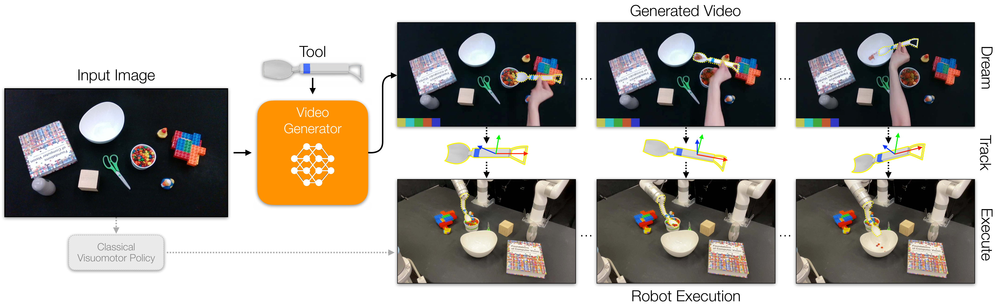
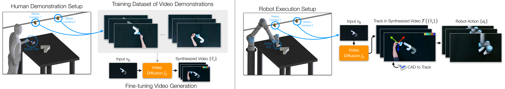
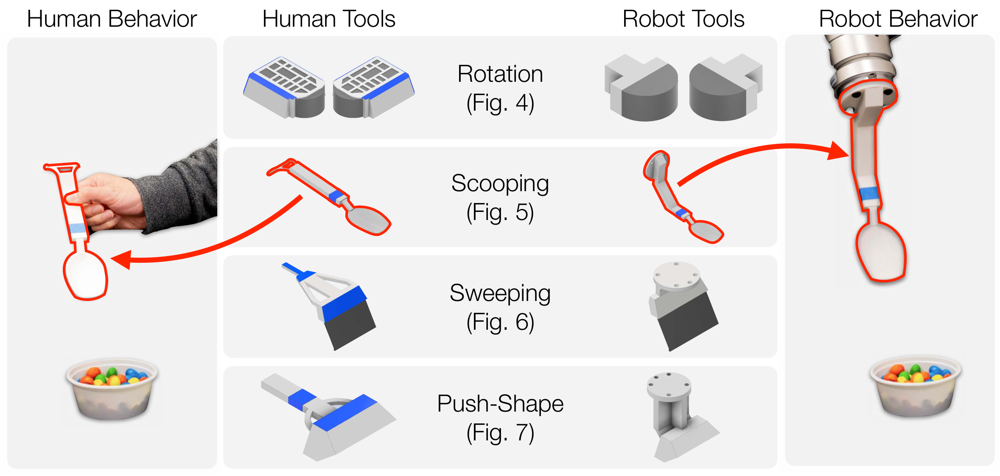
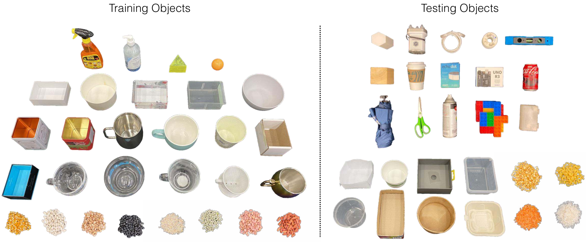
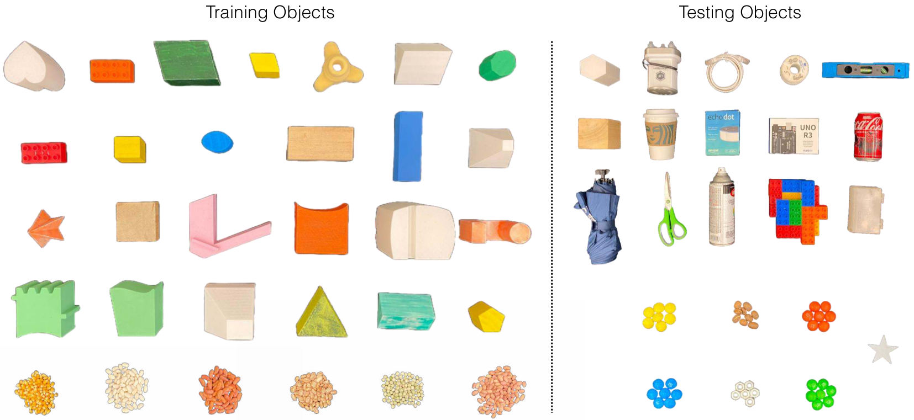
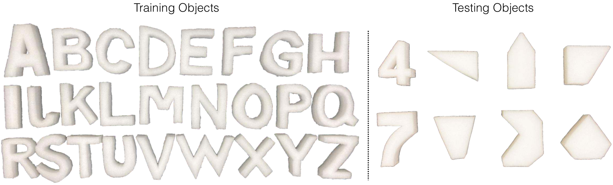
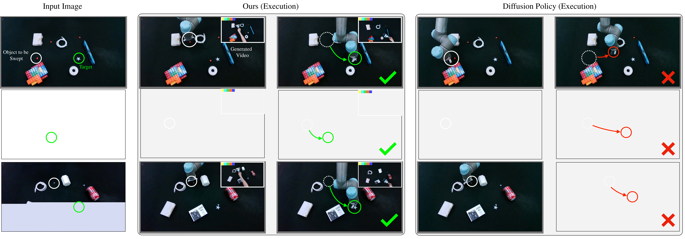
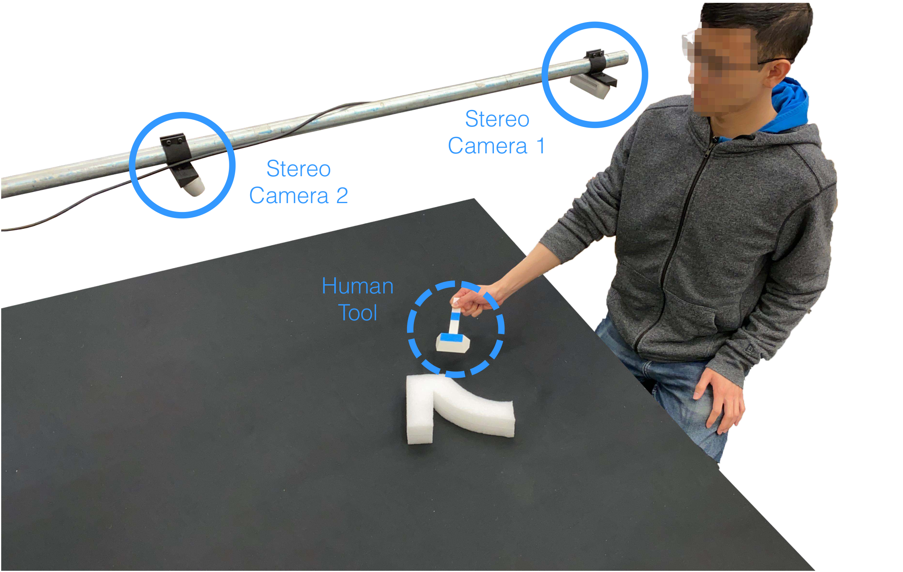
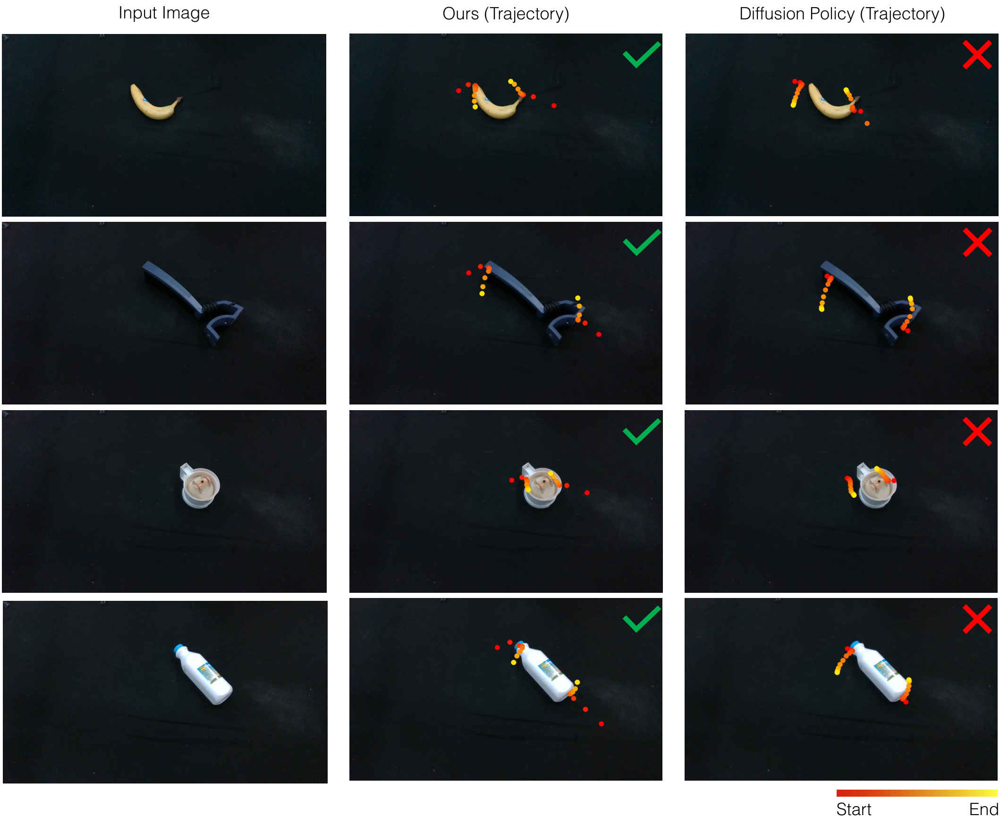
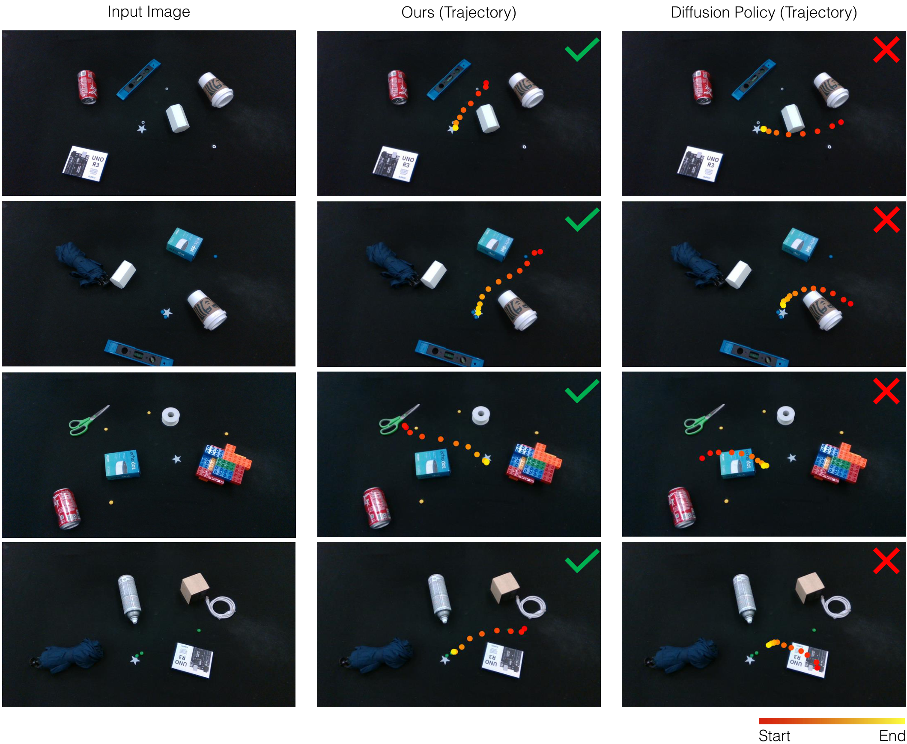

Dreamitate: Real-World Visuomotor Policy Learning via Video Generation
这篇论文把“生成一段人类用工具完成任务的视频”作为机器人策略学习的中间层：视频模型先想象工具该怎么动，再通过 3D 工具跟踪把轨迹交给真实机械臂执行。
1. 论文速览
Dreamitate 的核心判断是：对于很多工具操作任务，机器人真正需要复现的不是“人”的手臂动作，而是“工具”的三维运动。只要工具是已知刚体，并且视频模型能在新场景中生成合理的工具使用过程，就可以把生成视频中的工具轨迹提取出来，转成机器人末端执行器轨迹。
| 阅读导向 | 精简回答 |
|---|---|
| 论文要解决什么 | 减少真实机器人动作标注与遥操作数据依赖，让视觉运动策略能从人类工具使用视频中学习，并在未见物体、光照和桌面条件下泛化。 |
| 作者的方法抓手 | 使用同一套可 3D 打印工具连接人类演示和机器人执行；微调 Stable Video Diffusion 生成双目工具操作视频；用 MegaPose 与双目几何跟踪工具 6D 位姿；让机器人执行工具轨迹。 |
| 最重要的结果 | 四个真实任务上显著优于 Diffusion Policy：旋转 37/40 对 22/40，舀取 34/40 对 22/40，清扫 37/40 对 5/40，Push-Shape 的 mIoU/旋转误差为 0.731/8.0° 对 0.550/48.2°。 |
| 阅读时要注意的点 | 它不是通用语言条件策略，也不是闭环实时控制；实验依赖已知刚体工具、双目相机、可跟踪工具运动和任务级视频模型。优势来自工具中间表示，边界也主要来自这个表示。 |

2. 问题与动机
2.1 行为克隆的瓶颈
传统行为克隆需要成对的视觉观测和机器人动作标签。真实机械臂采集这类数据通常慢、贵，并且一旦换物体、换场景或换任务，很容易出现分布外失效。作者认为，直接从机器人轨迹学习固然干净，但它错过了互联网上和真实世界中大量更容易采集的人类操作视频。
2.2 视频生成模型的机会与落差
视频扩散模型已经能从静态图像生成合理的未来视觉动态，这意味着它可能携带了人类行为和物体交互的先验。但生成“人的视频”并不等于生成“机器人的动作”。人手、手臂、身体姿态和机器人末端执行器之间有明显 embodiment gap。Dreamitate 的关键转折是绕过人和机器人本体差异，把注意力收束到共享的工具。
2.3 论文选择的中间层
作者把工具看成跨 embodiment 的行动载体：人在演示中使用工具，机器人也装上同样工具。只要工具轨迹正确，手臂姿态可以交给逆运动学或轨迹执行模块处理。因此，视频模型不必直接输出机器人动作，而是输出可解释的工具运动视频。
3. 方法拆解

3.1 形式化目标
给定初始场景图像 $v_0$，目标是规划一串机器人动作 $a_t \\in SE(3)$。Dreamitate 把动作预测拆成两步：先生成未来视频，再从视频里读出工具轨迹。
这里 $f_\theta$ 是任务专属的视频生成模型，$T$ 是工具跟踪器。这个拆分让策略具有一个可视化中间结果：如果机器人失败，研究者可以检查是视频模型想错了，还是工具跟踪/轨迹执行出了问题。
3.2 数据采集：双目人类工具演示
训练数据来自人类使用定制工具完成任务的视频。每条演示的第一帧是场景输入，后续帧记录人如何移动工具。论文使用两个校准相机从不同角度观察桌面，这既提高工具可见性，也为后续 3D 位姿恢复提供几何约束。
附录补充了相机设置：两个 Intel RealSense D435i 相机相距约 660 mm，以约 45° 视角观察桌面，距离桌面约 760 mm。训练视频以 1280×720 录制，再裁剪和缩放给模型使用。Rotation 与 Scooping 使用 UFACTORY xArm 7，Sweeping 与 Push-Shape 使用 UR5。
3.3 视频模型：在 Stable Video Diffusion 上做任务微调
作者初始化于预训练 Stable Video Diffusion，并为每个任务训练一个模型。训练目标是从初始场景图像重建双目演示视频，损失是预测帧和真实帧之间的逐帧 $L_2$ 距离：
实现上，模型一次生成 25 帧：前 13 帧对应第一个视角，后 12 帧对应第二个视角。第一帧和输入相同，测试时会丢弃。作者冻结编码器和解码器，只微调空间/时间 attention 层，并修改每帧的图像条件 embedding 来标记输出视角。推理时使用 30 个 denoising step，classifier-free guidance 设为 1.0。
3.4 Track then Act：从生成视频到机器人轨迹
每个任务使用已知 CAD 模型的 3D 打印工具。生成视频出来后，系统用 MegaPose 在每帧中估计工具 6D 位姿，再结合双目相机标定把两个视角的估计融合成三维轨迹。附录说明其平移融合方式是把两个视角投影出的空间直线取最近点中点，旋转则取两视角估计的平均。
对于容易被遮挡的工具部位，作者做了任务化处理：舀取任务只跟踪手柄以避开颗粒物遮挡；清扫和 Push-Shape 中因为手柄被人手遮挡，改为跟踪工具主体。得到的工具轨迹 $a_0,\ldots,a_T$ 直接作为机器人末端执行器轨迹执行。

4. 实验结果
4.1 实验任务与数据规模
所有实验都在真实机器人和真实桌面环境中完成。训练和测试保持同一相机配置，但桌面、光照和对象集合不同；训练对象和测试对象不重叠。
| 任务 | 训练对象 | 演示数 | 测试对象 | 测试次数 |
|---|---|---|---|---|
| Rotation | 31 个对象 | 371 | 10 个对象 | 40 |
| Scooping | 17 个碗，8 种颗粒物 | 368 | 8 个碗，4 种颗粒物 | 40 |
| Sweeping | 6 种颗粒物 | 356 | 6 种颗粒物 | 40 |
| Push-Shape | 26 个字母形状 | 727 | 8 个数字/多边形形状 | 32 |



4.2 Baseline：Diffusion Policy
主要对比方法是 CNN 版 Diffusion Policy。为了公平，baseline 使用同一批训练数据；其目标轨迹同样通过 MegaPose 从人类演示中提取，而不是用额外机器人遥操作数据。输入为双目图像，图像编码器是两个预训练 ResNet-18，训练 200 epoch，预测未来 12 个时间步，并以 open-loop 方式执行。作者也尝试了 CLIP 变体，但效果更差。
4.3 主结果
| 方法 | Rotation | Scooping | Sweeping | Push-Shape mIoU | Push-Shape 旋转误差 |
|---|---|---|---|---|---|
| Diffusion Policy | 22/40 | 22/40 | 5/40 | 0.550 | 48.2° |
| Dreamitate | 37/40 | 34/40 | 37/40 | 0.731 | 8.0° |
结果最强的信号不是某一个任务上略有提升，而是四类几何和接触模式不同的任务都提升明显。尤其 Sweeping 从 5/40 到 37/40，说明 baseline 很难从图像直接回归出可靠工具路径，而 Dreamitate 的视频中间层能更好地表达“先绕开障碍，再把材料扫到目标”的空间过程。
4.4 分任务解读
Rotation
任务要求用夹持工具接触对象并逆时针旋转至少 25°，同时保持接触。Dreamitate 达到 92.5%，Diffusion Policy 为 55%。作者指出 baseline 常见失败是未建立接触、抓取点不稳定或滑脱；Dreamitate 的少数失败多发生在透明袋装玩具等视觉/接触都更困难的物体上。
Scooping
任务要求把颗粒物舀入目标容器。Dreamitate 为 34/40，Diffusion Policy 为 22/40。定性图显示 baseline 容易被周围物体干扰，或者把材料送向错误容器；Dreamitate 生成的视频轨迹更接近人类舀取动作。
Sweeping
任务要求清扫颗粒物并避开障碍。Dreamitate 为 37/40，Diffusion Policy 为 5/40。这里的差距特别大，原因可能是清扫任务不仅需要末端到达，还需要连续路径形状、避障和接触方向共同正确。
Push-Shape
这是 Push-T 风格的长时程任务，泡沫形状需要被推到目标 mask，同时调整朝向。Dreamitate 的 mIoU 为 0.731、旋转误差 8.0°；Diffusion Policy 虽能把物体推近目标，但经常没有完成正确旋转。


4.5 数据规模曲线
作者在 Rotation 上做了训练数据比例实验：Dreamitate 使用 1/3 数据时成功率为 77.5%，2/3 数据为 75.0%，全量数据为 92.5%；Diffusion Policy 分别为 7.5%、25.0%、55.0%。这组结果支持作者的解释：预训练视频模型提供了额外视觉运动先验，使 Dreamitate 在小规模人类演示下仍能维持较好性能。
5. 附录信息整合
5.1 模型超参数
附录给出了每个任务的视频模型训练设置。所有任务分辨率都是 768×448，学习率为 $10^{-5}$。Rotation、Scooping、Sweeping 大多训练 16384 step；Push-Shape 训练 17408 step。Rotation 与 Push-Shape 的 clip duration 为 2.0 秒、fps 为 6；Scooping 与 Sweeping 为 3.0 秒、fps 为 5。motion bucket score 均为 200。
| 任务 | 分辨率 | 学习率 | Batch | 训练步数 | Clip / FPS |
|---|---|---|---|---|---|
| Rotation Full | 768×448 | 1e-5 | 4 | 16384 | 2.0 s / 6 |
| Rotation 1/3 | 768×448 | 1e-5 | 3 | 15360 | 2.0 s / 6 |
| Scooping | 768×448 | 1e-5 | 4 | 16384 | 3.0 s / 5 |
| Sweeping | 768×448 | 1e-5 | 4 | 16384 | 3.0 s / 5 |
| Push-Shape | 768×448 | 1e-5 | 4 | 17408 | 2.0 s / 6 |
5.2 真实实验布置
黑布桌面被用于增加摩擦差异，尤其会提高 Push-Shape 的接触不确定性。Push-Shape 的 mIoU 在第一个双目视角中计算，并从多步执行中选取最佳图像来计算 IoU 和旋转误差。Sweeping 与 Push-Shape 还限制末端执行器高度，以避免工具碰撞桌面。

5.3 轨迹标注的一致性
值得注意的是，Diffusion Policy 的训练标签也来自同一套 MegaPose 工具跟踪管线。因此主对比并不是“作者方法有更好的轨迹标注”，而是“在同样轨迹来源下，视频生成中间层是否比直接动作扩散策略更稳”。这让主实验更集中地检验 Dreamitate 的方法假设。


6. 组会阅读线索
6.1 可以按三层问题讲
- 数据层：为什么人类工具视频比机器人动作数据更易扩展？为什么同一套工具能减少 embodiment gap？
- 表示层：为什么生成视频是有用中间表示？它相比直接预测动作多了哪些可解释结构？
- 执行层：把生成视频转成 SE(3) 工具轨迹时，哪些误差会被放大？双目跟踪和已知 CAD 模型各自解决什么问题？
6.2 建议重点讨论的细节
- Dreamitate 的成功并不只是“用了大模型”，而是把视频模型约束在工具轨迹这个机器人可执行空间里。
- 与 Diffusion Policy 的对比比较强，因为两者使用相同演示数据和同源轨迹标注；差异主要来自策略表示。
- Scaling curve 是很好的组会讨论点：1/3 数据下 Dreamitate 仍有 77.5%，但 2/3 数据略低于 1/3，说明小样本实验存在方差，不能过度解读为单调规律。
- Push-Shape 的旋转误差从 48.2° 降到 8.0°，说明视频中间层特别适合表达目标姿态和接触路径，而不只是终点位置。
7. 分析、局限与边界
这篇论文最有价值的地方
最有价值的地方是把视频生成模型的视觉运动先验落到了一个机器人可以执行、可以检查、可以调试的中间表示上。论文没有要求视频模型直接产生机器人关节命令，也没有把生成视频只当作好看的可视化；它明确通过工具 6D 跟踪把视频变成轨迹。这一点让“大规模视频先验”和“真实机器人控制”之间有了可操作的接口。
第二个价值是实验设计较贴近真实泛化问题。训练和测试对象不重叠，任务覆盖旋转、舀取、清扫和长时程推形状，且 baseline 使用同一批人类演示和同源轨迹标签。结果因此更能说明：当动作空间可以被工具轨迹表达时，生成式视频中间层可能比端到端动作扩散策略更稳。
结果为什么站得住
首先，四个任务的提升方向一致，并且覆盖了不同接触模式：持续接触旋转、颗粒物舀取、带障碍清扫、需要位置和朝向共同调整的 Push-Shape。其次，主要数字差距较大，例如 Sweeping 的 37/40 对 5/40、Push-Shape 旋转误差 8.0° 对 48.2°，不太像单个评估细节造成的小波动。第三，作者在附录中说明 baseline 与 Dreamitate 都用 MegaPose 从演示中获得轨迹，使对比更聚焦于策略学习形式，而不是额外标注优势。
不过，Rotation 的数据规模曲线也提醒我们：真实机器人实验有方差，1/3 数据 77.5%、2/3 数据 75.0% 并非单调。因此这组曲线更适合作为“预训练视频先验带来小数据稳定性”的支持证据，而不应被读成精确的 scaling law。
作者明确承认的局限
- 动作必须视觉可跟踪：系统依赖从生成视频中恢复工具轨迹，因此很难处理不可见、严重遮挡或非刚性的关键动作。
- 工具遮挡会导致失败：如果末端执行器或工具主体被手、物体或颗粒物严重遮挡，MegaPose 跟踪会不稳，后续机器人轨迹也会受影响。
- 刚性工具假设限制任务范围：目前更适合铲、推、扫、夹持这类由刚体工具主导的操作，不适合细粒度手指控制、柔性物体操作或复杂装配。
- 计算成本高：视频扩散模型推理成本较大，论文当前不支持实时闭环控制。作者认为未来的视频模型加速可能缓解这一点。
更深一层的适用边界
Dreamitate 的边界可以概括为：当任务的“正确性”主要由工具的 6D 轨迹决定时，它很有吸引力；当任务需要高频触觉反馈、闭环纠错、细微力控制或工具之外的隐变量时，它的开环视频到轨迹链条会变脆。换句话说，它把复杂机器人学习问题转成了一个更容易监督和解释的视频几何问题，但没有消除接触物理本身的不确定性。
组会上可以把这篇论文放在“视觉生成模型如何进入机器人控制”的谱系里讨论：它的回答不是让生成模型直接控制机器人，而是让生成模型产生一个人能看懂、几何算法能解析、机器人能执行的中间世界。
参考与复现备注
本文依据 arXiv:2406.16862 的 LaTeX 源码、PDF、主文与附录内容整理。报告中的图像来自论文源码随附或已转换的本地图片资产，均保存在 Report/2406.16862/figures/。
临时文件已保留在 tmp/arxiv_source_2406.16862.tar.gz、tmp/2406.16862.pdf 和 tmp/arxiv_source_2406.16862/，便于后续核对源码、PDF 与图表。